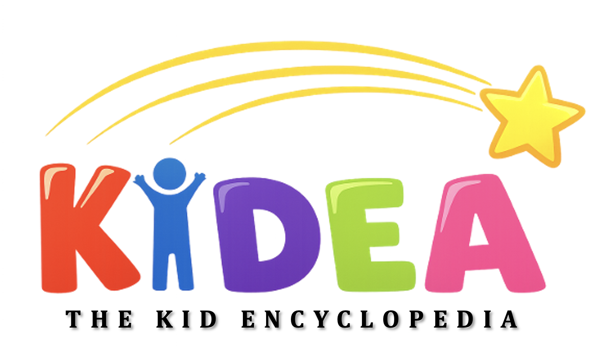

Meet KiDEA:
The Kid Encyclopedia
KiDEA is a pediatric anatomical imagery database designed to support the education and clinical training of medical students, pediatric residents, kinesiology students, and other healthcare professionals. It provides current, anatomically accurate visual resources to enhance understanding of pediatric anatomy, which is often underrepresented in traditional learning materials. By addressing this gap, KiDEA aims to improve clinical competence and confidence when working with pediatric populations.
Our Mission:
- Provide accessible, comprehensive, and clinically relevant pediatric anatomical imagery
- Support the education and training of healthcare students and professionals
- Address the gaps in pediatric-specific learning resources
- Contribute to the advancement of pediatric health by donating a portion of revenue to pediatric research initiatives
What We've Done So Far
- Concept developed during a startup hackathon at the Hunter Hub for Entrepreneurial Thinking, where KiDEA was awarded Best Prototype
- Built an initial MVP, including early-stage web development
- Invited to present at the Calgary Youth Science Fair, where strong engagement and curiosity about anatomy were observed from youth attendees